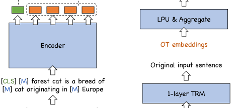
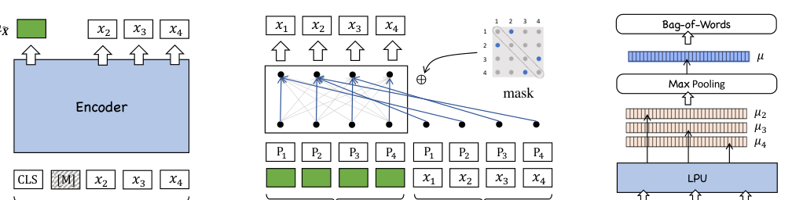

原文: arXiv:2211.08769（EACL 2023 Findings） 说明: 本文为论文全文中文技术展开，公式编号与原文一致；图片自 arXiv HTML 抽取，caption 中译；表格数值保留原始数字，仅表头/说明中译。
预印本信息： arXiv:2211.08769v1 [cs.CL]，2022 年 11 月 16 日；会议版本：EACL 2023 Findings。别名：RetroMAE v2。
代码： https://github.com/staoxiao/RetroMAE
DupMAE / RetroMAE v2：双工掩码自编码器面向检索的语言模型预训练（RetroMAE v2: Duplex Masked Auto-Encoder For Pre-Training Retrieval-Oriented Language Models）¶
作者： Shitao Xiao¹、Zheng Liu²
单位： ¹ 北京邮电大学；² 华为技术有限公司
邮箱： stxiao@bupt.edu.cn · zhengliu1026@gmail.com
摘要（Abstract）¶
为更好支持网页搜索与问答等检索应用，越来越多工作聚焦于面向检索的语言模型预训练（Gao & Callan, 2021; Wang et al., 2021; Xiao et al., 2022a）。既有方法主要提升 [CLS] token 的上下文嵌入的语义表征能力。然而近期研究（Lin et al., 2022）表明：除 [CLS] 之外的普通 token（Ordinary Tokens, OT）也蕴含有用信息——利用它们能得到更好的表示效果。因此有必要把预训练扩展到"CLS + OT 联合"。
本文提出 DupMAE（Duplex Masked Auto-Encoder），即 双工掩码自编码器：同时提升 [CLS] 与 OT 两类上下文嵌入的语义表征能力。DupMAE 引入两个解码任务：
- 基于 [CLS] 嵌入重建原句（同 RetroMAE）；
- 基于所有 OT 嵌入最小化词袋（Bag-of-Words, BoW）损失。
两个解码损失加和训练一个统一的编码器。推理时，[CLS] 嵌入与 OT 嵌入分别经过降维与聚合后拼接，作为输入的统一语义表征。DupMAE 简单而有效：以极低的解码计算成本显著提升模型的表征能力与可迁移性——在 MS MARCO 与 BEIR 上取得可观提升（MS MARCO Passage MRR@10 达 0.426；BEIR 18 集平均 nDCG@10 达 0.475）。
1 引言（Introduction）¶
背景。稠密语义检索是网页搜索、问答、对话系统（Huang et al., 2013; Karpukhin et al., 2020; Komeili et al., 2021; Izacard et al., 2022）等诸多真实场景的核心。基于预训练语言模型（BERT、RoBERTa、T5）作 retriever backbone 已是标配（Devlin et al., 2019; Liu et al., 2019; Raffel et al., 2019）。
问题。通用预训练模型不直接适合检索——需要复杂微调技巧：进阶负例采样（Xiong et al., 2020; Qu et al., 2020）、知识蒸馏（Hofstätter et al., 2021; Lu et al., 2022）、联合训练（Ren et al., 2021; Zhang et al., 2021）。为减少这些复杂性并提升检索质量，业界开始探索面向检索的语言模型预训练。
两条既有路线：
- 自对比学习（SCL）：Chang et al. (2020)、Guu et al. (2020) 等靠数据增强构造正负样本对比学习；
- 自编码（AE）：Wang et al. (2021)、Lu et al. (2021) 等让模型从句向量重建输入。近期 SimLM（Wang et al., 2022）与 RetroMAE（Xiao et al., 2022a）在 AE 路线上进一步改进 encoder/decoder 机制，取得显著提升。
核心观察：既有工作只优化 [CLS]。但 Lin et al. (2022) 与 Luan et al. (2021)、Santhanam et al. (2021) 等研究显示：多向量或 token 级表示比单向量更有判别力，OT 嵌入蕴含 [CLS] 无法覆盖的信息（尤其在长文档、语义丰富场景）。作者的立场：应该把预训练目标同时施加到 [CLS] 与 OT 两侧。
DupMAE 的三个要点：
-
工作流：一个统一的编码器同时输出 [CLS] 与 OT 的上下文嵌入；两个解码器负责各自的预训练目标：
- [CLS] 解码（沿用 RetroMAE）：[CLS] 嵌入 + 加噪输入 → 单层 Transformer 重建原句；
- OT 解码（新）：OT 嵌入经过 线性投影单元（Linear Projection Unit, LPU） 映射到词表维；用 max-pooling 聚合为 BoW 分布；与真实 BoW 做交叉熵。
-
优点：两个解码器都被有意做得极简（一层 Transformer + 一个 LPU）——预训练低成本；同时因 decoder 太弱而逼迫 encoder 保留信息——预训练任务难。
-
表示：推理时把 [CLS] 嵌入线性降维到低维、把 OT 嵌入稀疏化保留 top-N，两者拼接作最终表示；配合合适的降维配置，内存与相似度计算成本与传统方法相当。
实证。BERT-base 规模 encoder，配 Wikipedia + BookCorpus + MS MARCO 语料预训练；MS MARCO 有监督检索 MRR@10 0.426，BEIR 零样本 18 集平均 nDCG@10 0.475——两者都是 SOTA。
2 相关工作（Related Works）¶
稠密语义检索（Karpukhin et al., 2020; Zhang et al., 2022; Xiao et al., 2022b）：把 query 与 doc 映射到共享潜空间，用向量相似度衡量相关性。
面向检索的预训练：
- SCL 类（Chang et al., 2020; Guu et al., 2020; Izacard et al., 2021）：数据增强 + in-batch neg 对比学习。局限：依赖增强质量、需要大量负例。
- AE 类（Lu et al., 2021; Wang et al., 2021）：从句向量重建输入。近期 SimLM（Wang et al., 2022）与 RetroMAE（Xiao et al., 2022a）改进了 encoder-decoder 机制。
多向量表示（Luan et al., 2021; Humeau et al., 2019; Lin et al., 2022）：ColBERT 用 token 级向量、Poly-encoder 用多向量……这些工作说明除 [CLS] 之外的 token 表示有额外信息。DupMAE 借鉴这一直觉，但保留单向量接口（[CLS] + 稀疏 OT 拼接），不引入 late interaction 的额外索引开销。
3 方法（Methodology）¶
3.1 总览（Overview）¶

图 1（原文对应图 1）： DupMAE 高层示意。加了 mask 的输入 "[CLS] [M] forest cat is a breed of [M] cat originating in [M] Europe" 进入编码器，产出 [CLS] 嵌入（绿色）与 OT 嵌入（黄色）。
- [CLS] 解码分支：把 [CLS] 嵌入与加噪输入拼接，过 1 层 Transformer 重建原句（沿用 RetroMAE）。
- OT 解码分支：所有 OT 嵌入经过 LPU 映射到词表维，做 max-pooling 得到 BoW 表征，与真实 BoW 做交叉熵。
编码器统一、解码器双工——故名 "Duplex"。

图 2（原文对应图 2）： DupMAE 训练框架三阶段。
- (A) Encoding：温和 mask 的输入过 encoder，产出 [CLS] 嵌入 \(h_{\tilde X}\) 与 OT 嵌入 \(\{e_{x_1}, \dots, e_{x_N}\}\)。
- (B) [CLS] Decoding：与 RetroMAE 一致——用 two-stream + position-specific mask 让 [CLS] 嵌入引导重建每个 token。
- (C) OT Decoding：OT 嵌入过 LPU（\(W_O\)）映射到 \(|V|\) 维，token 维 max-pool 得到聚合向量 \(\mu_{\tilde X_{\text{enc}}} \in \mathbb{R}^{|V|}\)；对该向量做 BoW 交叉熵。
3.2 RetroMAE 预备（Preliminary of RetroMAE）¶
DupMAE 建立在 RetroMAE 之上，先复述 RetroMAE 的关键机制（详见 RetroMAE 中译）：
- 原句 \(X\) 用温和 mask（15–30%）加噪为 \(\tilde X_{\text{enc}}\)：
- \(X\) 再用激进 mask（50–70%）加噪为 \(\tilde X_{\text{dec}}\)；single-layer decoder 输入构造 two-stream：
- 位置专属 mask \(M\)：
- 全 token 参与重建：
- \(M\) 规则：
（每个 token \(x_i\) 只能看到 [CLS]（位置 0）与一个采样得的 non-self 位置子集；不能 attend 自己。）
RetroMAE 的核心精神：encoder 必须通过上下文嵌入把输入的全部信息保留下来，因为极简的 decoder 只能通过它做重建。DupMAE 把这一精神扩展到 [CLS] + OT 两侧。
3.3 DupMAE 扩展（Extension to DupMAE）¶
DupMAE 在 RetroMAE 基础上加一条OT 解码分支：
Step 1：LPU 映射到词表空间。OT 嵌入 \(E_{\tilde X_{\text{enc}}} = \{e_{x_1}, \dots, e_{x_N}\}\)（不含 mask 位置）经过一个共享的线性投影 \(W_O \in \mathbb{R}^{d \times |V|}\)：
\(d\) 为嵌入维（768），\(|V|\) 为词表大小（30522）。每个 OT 得到一个 \(|V|\) 维向量，可以理解为"该 token 上下文对整个词表的贡献分布"。
Step 2：Max-Pooling 聚合。跨 token 维做逐词表位置的 max-pool：
结果 \(\mu_{\tilde X_{\text{enc}}} \in \mathbb{R}^{|V|}\) 相当于保留了输入的 BoW 特征：每个词表位置的值反映"输入里是否含义相关"。
Step 3：BoW 交叉熵损失。让 \(\mu_{\tilde X_{\text{enc}}}\) 与真实的输入 BoW 分布对齐——用交叉熵：
其中 \(\operatorname{set}(X)\) 是原句中出现过的唯一 token 集合。\(V\) 是全词表。作者选择"每个唯一 token 都有一份 CE 损失"——比"整句 softmax 一次"更细粒度。
总损失：encoder 的 MLM \(\mathcal{L}_{\text{mlm}}\) + [CLS] 解码 \(\mathcal{L}_{\text{dec}}\)（式 4）+ OT 解码 \(\mathcal{L}_{\text{BoW}}\)（式 8）：
表示（推理时）：如何构造输入的最终语义向量？DupMAE 用两段拼接：
- [CLS] 分支降维（线性投影到低维 \(d'\)）：
论文默认 \(d' = 384\)。
- OT 分支稀疏化（取 top-K 词表位置）：
其中 \(I_X\) 是 \(\mu_X\) 中取值最大的前 \(k\) 个位置的索引。
最终表示 = \([\hat h_X;\; \hat \mu_X]\)——低维密向量 + 稀疏词表权重。相似度：
- 第一项：密向量内积（同 dense retrieval）；
- 第二项：只在 \(d\) 的 top-K 词表位置上算，等价于 SPLADE 风格的稀疏内积；工程上可用倒排索引加速。
配置合适的 \(d'\) 与 top-K 后，总存储与检索开销与 768 维单向量相当。
3.4 微调（Fine-Tuning）¶
预训练完成后分三步微调：
Step 1：In-Batch InfoNCE
只用批内负例；便宜、快、稳。
Step 2：加入 ANN Hard Neg
用 Step 1 得到的 encoder 对每个 query 挖 ANN top-K 中的 hard neg \(D^-\)：
Step 3：知识蒸馏
训一个 cross-encoder 对每个 (q, d) 打分，用 softmax 得到软标签 \(\sigma_q^d\)：
成本对比：Step 1 + 2 便宜；Step 3 因为要训 cross-encoder + 为所有 (q, d) 打分而昂贵。§4 会分别报告 Step 2 与 Step 3 的结果。
4 实验（Experiment）¶
研究问题：
- RQ1：DupMAE 是否产出比 RetroMAE 更好的语义表示？
- RQ2：DupMAE 是否在不同场景（有监督/零样本，hard neg/KD 微调）下都能保持优势？
- RQ3：DupMAE 是否受益于 [CLS] 与 OT 的联合使用？各自贡献如何？
- RQ4：预训练任务是否同时改善了 [CLS] 与 OT 两侧的表征质量？
4.1 实验设置（Setup）¶
数据集：
- MS MARCO Passage：有监督评测。50 万训练 query，从 880 万段落检索。三个测试集：Dev、DL'19、DL'20。
- BEIR 18 集：零样本评测。预训练模型在 MS MARCO 上微调后测其它 18 集。
基线：
- 有监督（hard neg 微调）：ANCE、SEED、ADORE、Condenser、coCondenser。
- 有监督（KD 微调）：TAS-B、RocketQAv2、AR2、AR2+SimANS、SPLADEv2、ColBERTv2、ERNIE-Search、SimLM、RetroMAE。
- 零样本：BM25、BERT、RetroMAE、Contriever（大量对比数据）、GTR-*（GTR-XXL 是 4.8B 参数，40× 大）。
实现：
- Encoder：12 层 BERT-base，768 隐维，vocab 30522。
- Decoder：1 层 Transformer。
- [CLS] & OT 嵌入默认降到 384 维（相似度算力 ≈ 768 维基线）。
- Mask：encoder 0.3、decoder 0.5。
- 语料：Wikipedia + BookCorpus + MS MARCO。
- 硬件：8× V100 32GB。
4.2 主要结果（Main Results）¶
表 1：MS MARCO Passage 检索（有监督）
| 方法 | 微调 | Dev MRR@10 | Dev R@50 | R@1000 | DL'19 nDCG@10 | DL'20 nDCG@10 |
|---|---|---|---|---|---|---|
| ANCE | hard | 0.330 | – | 0.959 | 0.648 | 0.615 |
| SEED | hard | 0.339 | – | 0.961 | – | – |
| ADORE | hard | 0.347 | – | – | 0.683 | – |
| Condenser | hard | 0.366 | – | 0.974 | 0.698 | – |
| coCondenser | hard | 0.382 | – | 0.984 | 0.717 | 0.684 |
| TAS-B | distill | 0.340 | – | 0.975 | 0.712 | 0.693 |
| RocketQAv2 | distill | 0.388 | 0.862 | 0.981 | – | – |
| AR2 | distill | 0.395 | 0.878 | 0.986 | – | – |
| AR2+SimANS | distill | 0.409 | 0.887 | 0.987 | – | – |
| SPLADEv2 | distill | 0.368 | – | 0.979 | 0.729 | – |
| ColBERTv2 | distill | 0.397 | 0.868 | 0.984 | – | – |
| ERNIE-Search | distill | 0.401 | 0.877 | 0.982 | – | – |
| SimLM | distill | 0.411 | 0.878 | 0.987 | 0.714 | 0.697 |
| RetroMAE | distill | 0.416 | 0.885 | 0.988 | 0.681 | 0.706 |
| DupMAE (stage 2) | hard | 0.4102 | 0.8875 | 0.9874 | 0.7128 | 0.7095 |
| DupMAE (stage 3) | distill | 0.4258 | 0.8966 | 0.9893 | 0.7509 | 0.7083 |
（表 1：DupMAE 与近年有代表性基线的对比。）
观察：
- DupMAE (stage 3) 在所有指标上超过所有基线，Dev MRR@10 达 0.4258，比 RetroMAE 提升 +1% 绝对分。
- DupMAE (stage 2) 仅用 hard neg 微调（不用 KD）就能超过大多数用 KD 的基线——说明预训练的收益能让下游微调变简单。
- KD 类基线普遍优于 hard neg 类，但 DupMAE 让两种微调都变强——对工业部署非常友好：预算充足时上 KD，紧张时用 hard neg 仍强。
表 2：BEIR 零样本 nDCG@10（在 MS MARCO 上微调，测其它 18 集）
| 数据集 | BM25 | BERT | SEED | Condenser | Contriever | GTR-base | GTR-XXL | RetroMAE | DupMAE |
|---|---|---|---|---|---|---|---|---|---|
| TREC-COVID | 0.656 | 0.615 | 0.627 | 0.750 | 0.596 | 0.539 | 0.501 | 0.772 | 0.728 |
| BioASQ | 0.465 | 0.253 | 0.308 | 0.322 | 0.383 | 0.271 | 0.324 | 0.421 | 0.508 |
| NFCorpus | 0.325 | 0.260 | 0.278 | 0.277 | 0.328 | 0.308 | 0.342 | 0.308 | 0.346 |
| NQ | 0.329 | 0.467 | 0.446 | 0.486 | 0.498 | 0.495 | 0.568 | 0.518 | 0.570 |
| HotpotQA | 0.603 | 0.488 | 0.541 | 0.538 | 0.638 | 0.535 | 0.599 | 0.635 | 0.681 |
| FiQA-2018 | 0.236 | 0.252 | 0.259 | 0.259 | 0.329 | 0.349 | 0.467 | 0.316 | 0.345 |
| Signal-1M(RT) | 0.330 | 0.204 | 0.256 | 0.261 | 0.199 | 0.261 | 0.273 | 0.265 | 0.213 |
| TREC-NEWS | 0.398 | 0.362 | 0.358 | 0.376 | 0.428 | 0.337 | 0.346 | 0.428 | 0.427 |
| Robust04 | 0.408 | 0.351 | 0.365 | 0.349 | 0.476 | 0.437 | 0.506 | 0.447 | 0.479 |
| ArguAna | 0.315 | 0.265 | 0.389 | 0.298 | 0.446 | 0.511 | 0.540 | 0.433 | 0.474 |
| Touche-2020 | 0.367 | 0.259 | 0.225 | 0.248 | 0.204 | 0.205 | 0.256 | 0.237 | 0.343 |
| CQADupStack | 0.299 | 0.282 | 0.290 | 0.347 | 0.345 | 0.357 | 0.399 | 0.317 | 0.320 |
| Quora | 0.789 | 0.787 | 0.852 | 0.853 | 0.865 | 0.881 | 0.892 | 0.847 | 0.845 |
| DBPedia | 0.313 | 0.314 | 0.330 | 0.339 | 0.413 | 0.347 | 0.408 | 0.390 | 0.418 |
| SCIDOCS | 0.158 | 0.113 | 0.124 | 0.133 | 0.165 | 0.149 | 0.161 | 0.150 | 0.153 |
| FEVER | 0.753 | 0.682 | 0.641 | 0.691 | 0.758 | 0.660 | 0.740 | 0.774 | 0.800 |
| Climate-FEVER | 0.213 | 0.187 | 0.176 | 0.211 | 0.237 | 0.241 | 0.267 | 0.232 | 0.232 |
| SciFact | 0.665 | 0.533 | 0.575 | 0.593 | 0.677 | 0.600 | 0.662 | 0.653 | 0.699 |
| 平均 | 0.423 | 0.371 | 0.391 | 0.407 | 0.448 | 0.416 | 0.458 | 0.452 | 0.475 |
（表 2：BEIR 零样本 nDCG@10。DupMAE 在 13/18 集上第一，平均 0.475，比 RetroMAE 提升 +2.3。）
观察：
- DupMAE 在 13/18 集上第一，平均超 RetroMAE +2.3 nDCG@10。
- BM25 是很强的零样本基线：在 18 集中 8 集击败 GTR-XXL（4.8B 参数），说明"稠密不一定优于稀疏"。DupMAE 在 15/18 集上胜过 BM25，平均高 +5.2。
- 相比 Contriever（600M+ 对比训练数据）、GTR-XXL（40× 模型），DupMAE 只用 BERT-base + 少量语料 就取得更好结果——预训练算法本身的收益。
结论（回应 RQ1 与 RQ2）：
- Con1：DupMAE 比 RetroMAE 显著提升检索质量，说明联合训练 [CLS] + OT 有真实收益。
- Con2：DupMAE 在不同场景（有监督/零样本，hard neg/KD 微调）都保持优势，实用性强。
4.3 消融实验（Ablations）¶
表 3：预训练任务的消融（MS MARCO Dev，hard neg 微调）
| 方法 | MRR@10 | MRR@100 | R@10 | R@100 | R@1000 |
|---|---|---|---|---|---|
| 1. 预训练任务 | |||||
| RetroMAE | 0.3928 | 0.4032 | 0.6749 | 0.9178 | 0.9849 |
| CLS decoding only | 0.4008 | 0.4099 | 0.6906 | 0.9229 | 0.9840 |
| OT decoding only | 0.4002 | 0.4092 | 0.6890 | 0.9213 | 0.9831 |
| CLS and OT decoding | 0.4102 | 0.4202 | 0.7049 | 0.9280 | 0.9874 |
| 2. 表示配置 | |||||
| CLS:768 | 0.3941 | 0.4040 | 0.6865 | ... | ... |
（表 3 第一部分：预训练目标的消融。）
关键发现：
- CLS decoding only 与 RetroMAE 用同一预训练目标（只重建 [CLS]），但 CLS decoding only 更好（0.4008 vs 0.3928）——差别来自推理时的表示方式：CLS decoding only 使用 [CLS] + OT 联合表示（这两侧都存在，只是训练目标只针对 [CLS]），而 RetroMAE 只用 [CLS]。说明"用 OT 做表示"本身就有帮助。
- OT decoding only（0.4002）与 CLS decoding only 相近，说明只训 OT 也足以撑起检索。
- CLS + OT 联合（0.4102）比任一单侧高约 1 分——两者互补。
表 3 第二部分：表示配置的消融
- CLS 维度：384 vs 768，384 略优（信息压缩正则效果）；
- OT top-K：作者取 top-N 让稀疏计算成本可控；具体消融数字见论文附录。
结论（回应 RQ3 与 RQ4）：
- Con3：[CLS] 与 OT 表示互补——单独用任一都不如两者拼接。
- Con4：预训练目标同时改善两侧的表征质量——只训一侧另一侧质量较差。
5 结论（Conclusion）¶
作者提出 DupMAE（RetroMAE v2）：在 RetroMAE 的基础上，同时训练 [CLS] 与 OT 两类上下文嵌入的语义表征能力。两个解码器都被有意做得极简（单层 Transformer + LPU），预训练成本低但任务困难，迫使 encoder 保留丰富语义。推理时把 [CLS] 降维与 OT 稀疏化后拼接，实现"密向量 + 稀疏词权重"的高效检索。
MS MARCO 有监督 MRR@10 达 0.4258（超过所有既有基线，包括 KD 类）；BEIR 零样本 18 集平均 nDCG@10 达 0.475（比 RetroMAE +2.3）。DupMAE 展示了一条清晰的方向：面向检索的预训练应超越单点 [CLS]，向"token 级 + 单向量"的双工模式发展。
附录索引（Appendix Highlights）¶
- A 预训练超参数：encoder 掩码 0.3、decoder 掩码 0.5、[CLS] 与 OT 均降到 384 维；8× V100 32GB 训 8 epoch。
- B 微调超参数：Stage 1（IB 对比）、Stage 2（+ ANN hard neg）、Stage 3（+ cross-encoder KD）三阶段。
- C BEIR 18 集分项结果详见表 2（正文已完整列出）。
翻译约定：双工掩码自编码器（Duplex Masked Auto-Encoder, DupMAE）、[CLS] token（CLS 标记）、普通 token（Ordinary Tokens, OT）、词袋（Bag-of-Words, BoW）、线性投影单元（Linear Projection Unit, LPU）、稠密检索、bi-encoder、cross-encoder、hard negative、in-batch negative、知识蒸馏。ANCE / RocketQAv2 / SimLM / RetroMAE / SEED / Condenser / coCondenser / TAS-B / SPLADEv2 / ColBERTv2 / GTR / Contriever / BM25 / MS MARCO / BEIR / DPR / MLM 按惯例不译。